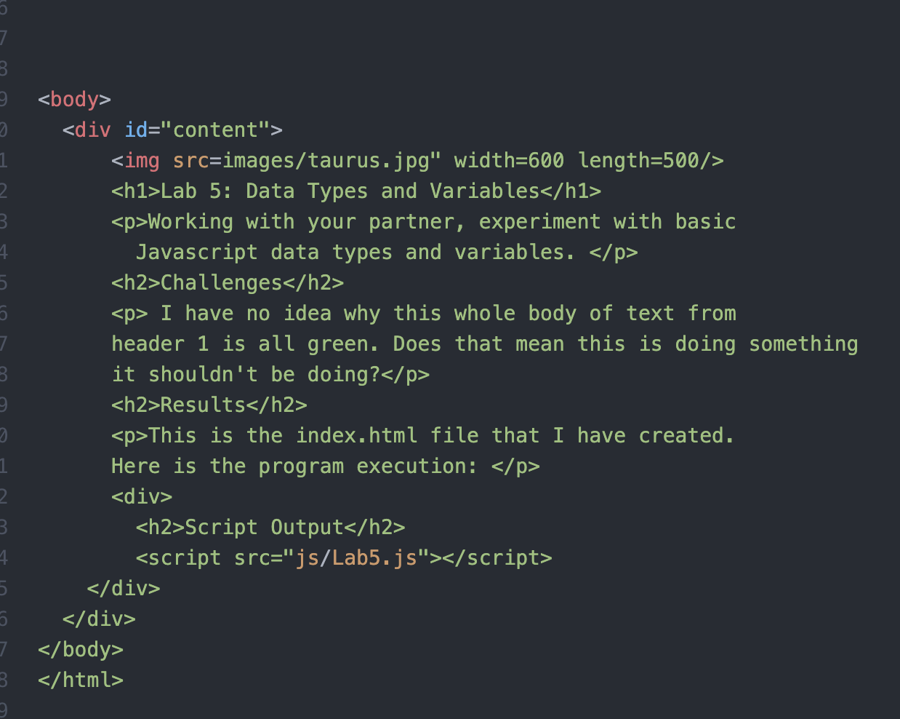

Working with my partner, we experimented with basic Javascript data types and variables.
The challenges I faced for this lab was remembering what steps I needed to take to get my lines working properly. I also had/continuing to have problems with linking my .js to the index.html. In this image below, you can see the problem I had with getting only green lines.
Well you are looking at the index.html file I created. Here is the program execution: